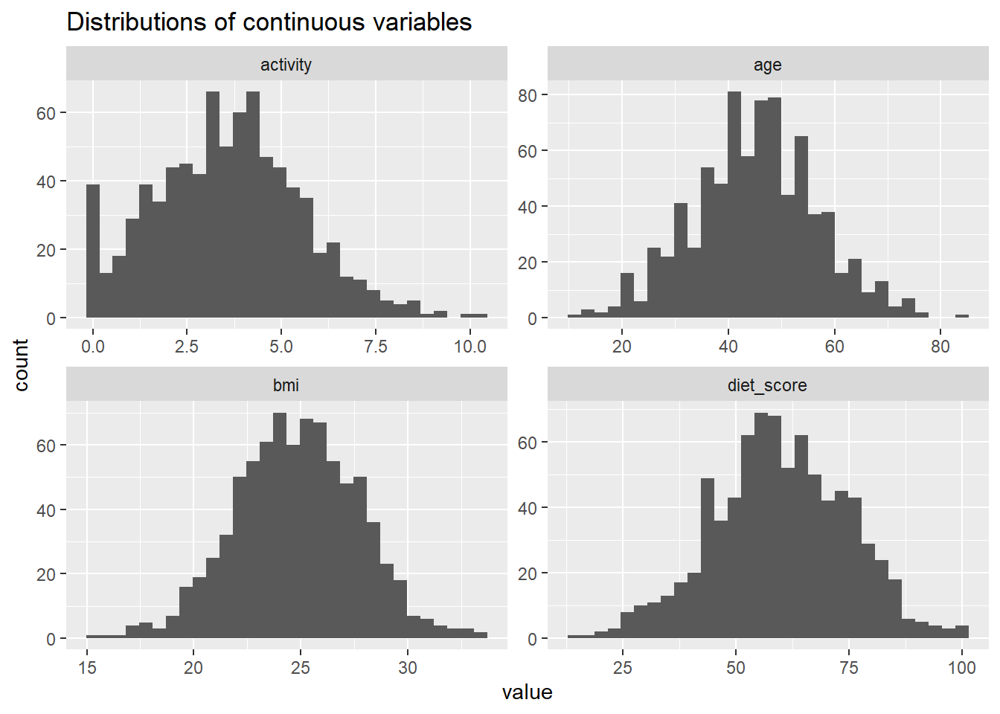
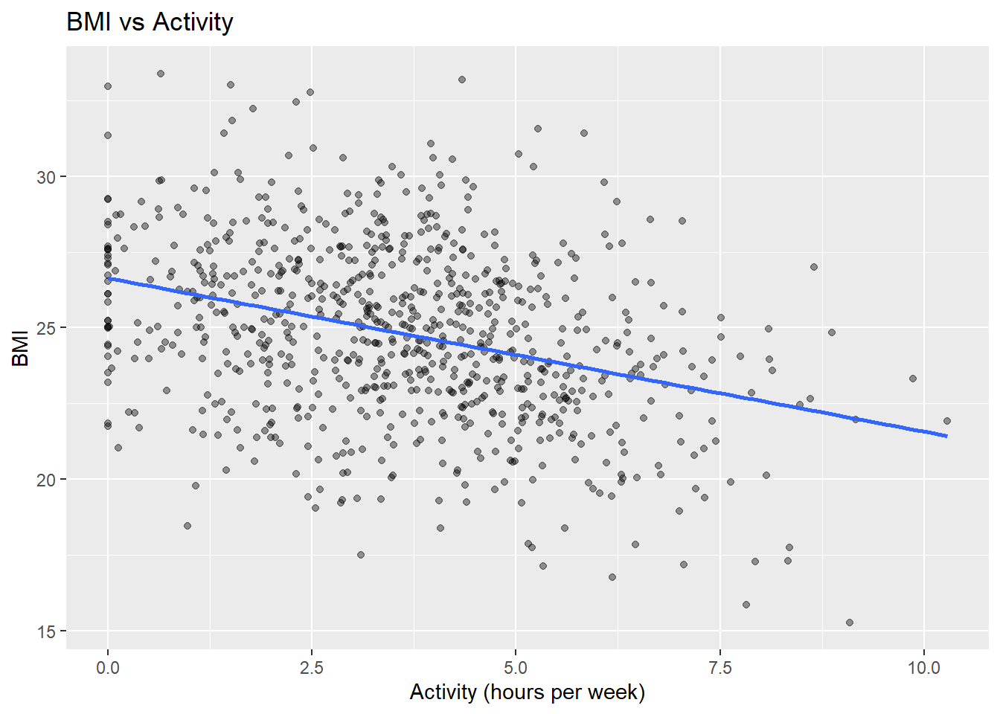
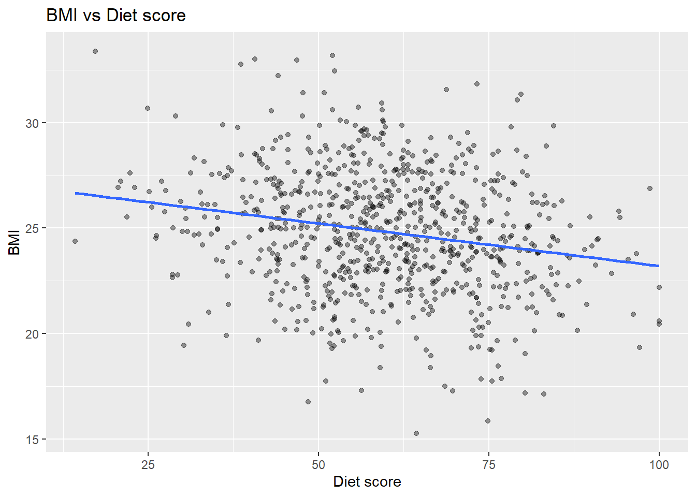
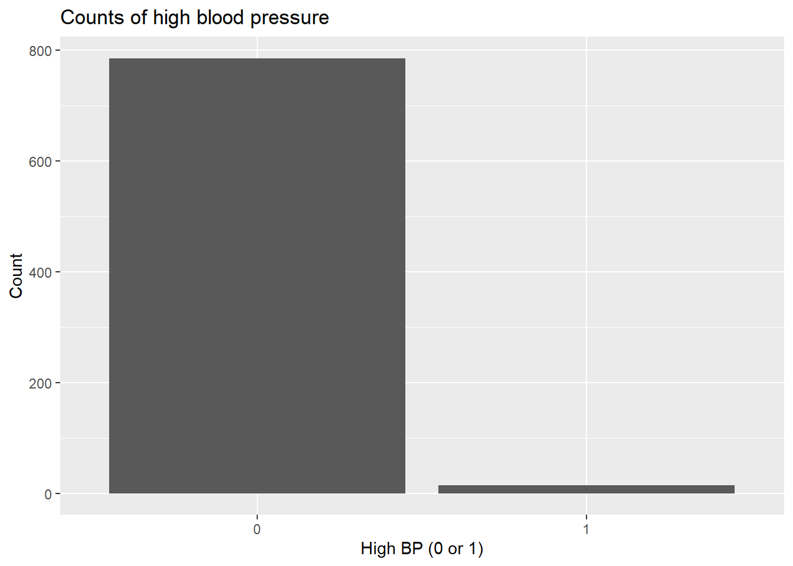
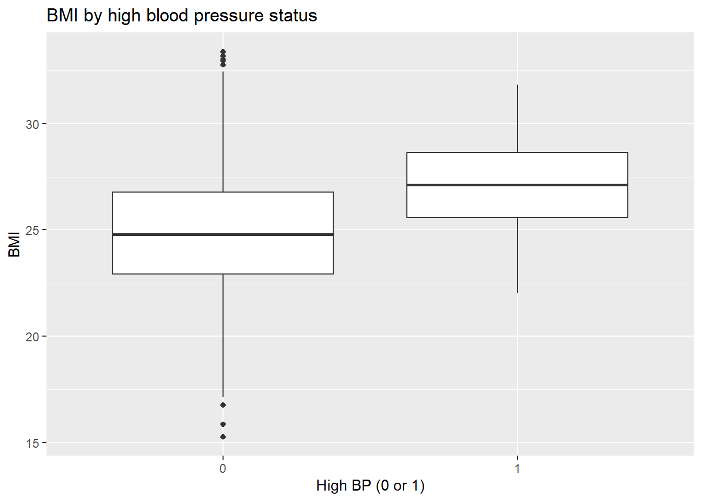
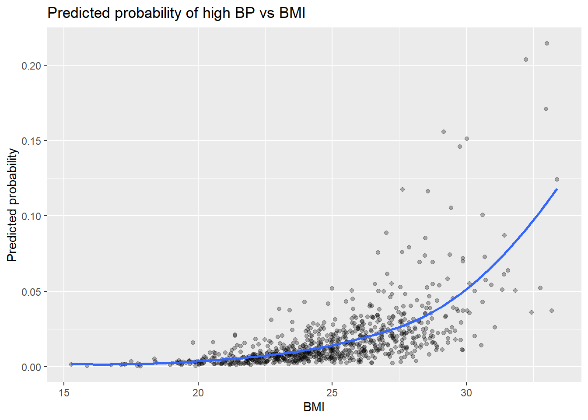

library(tidyverse)
set.seed(123)
n <- 800
synthetic <- tibble(
age = round(rnorm(n, mean = 45, sd = 12)),
activity = pmax(0, rnorm(n, mean = 3.5, sd = 2)),
diet_score = pmin(100, pmax(0, rnorm(n, mean = 60, sd = 15)))
) |>
mutate(
bmi = 27 +
0.08 * (age - 45) +
-0.6 * activity +
-0.04 * (diet_score - 60) +
rnorm(n, mean = 0, sd = 2.5)
) |>
mutate(
lp = -6 +
0.05 * age +
0.10 * (bmi - 27) +
-0.12 * activity +
-0.01 * (diet_score - 60),
prob_high_bp = plogis(lp),
high_bp = rbinom(n, size = 1, prob = prob_high_bp)
) |>
select(-lp)
glimpse(synthetic)Rows: 800
Columns: 6
$ age <dbl> 38, 42, 64, 46, 47, 66, 51, 30, 37, 40, 60, 49, 50, 46, 3…
$ activity <dbl> 4.2125667, 2.1839796, 5.2104044, 5.8058725, 4.0525491, 3.…
$ diet_score <dbl> 55.66465, 69.84770, 53.19003, 51.09203, 34.34431, 56.8582…
$ bmi <dbl> 22.87804, 23.72734, 24.19694, 22.92355, 27.52766, 27.1737…
$ prob_high_bp <dbl> 0.006865543, 0.010072519, 0.025644316, 0.008877924, 0.021…
$ high_bp <int> 0, 0, 0, 0, 0, 0, 0, 0, 0, 0, 0, 0, 0, 0, 0, 0, 0, 0, 0, …summary(synthetic) age activity diet_score bmi
Min. :11.00 Min. : 0.000 Min. : 14.28 Min. :15.28
1st Qu.:38.00 1st Qu.: 2.173 1st Qu.: 50.22 1st Qu.:22.92
Median :45.00 Median : 3.610 Median : 59.50 Median :24.85
Mean :45.14 Mean : 3.583 Mean : 59.93 Mean :24.82
3rd Qu.:53.00 3rd Qu.: 4.826 3rd Qu.: 70.49 3rd Qu.:26.80
Max. :84.00 Max. :10.281 Max. :100.00 Max. :33.39
prob_high_bp high_bp
Min. :0.0008663 Min. :0.0000
1st Qu.:0.0071528 1st Qu.:0.0000
Median :0.0122859 Median :0.0000
Mean :0.0167763 Mean :0.0175
3rd Qu.:0.0211079 3rd Qu.:0.0000
Max. :0.1381174 Max. :1.0000 ## Step 2: Exploratory analysis- Distribution
synthetic |>
select(age, activity, diet_score, bmi) |>
pivot_longer(everything()) |>
ggplot(aes(x = value)) +
geom_histogram(bins = 30) +
facet_wrap(~name, scales = "free") +
labs(title = "Distributions of continuous variables")
ggplot(synthetic, aes(x = activity, y = bmi)) +
geom_point(alpha = 0.4) +
geom_smooth(method = "lm", se = FALSE) +
labs(title = "BMI vs Activity", x = "Activity (hours per week)", y = "BMI")
## BMI relationship
ggplot(synthetic, aes(x = diet_score, y = bmi)) +
geom_point(alpha = 0.4) +
geom_smooth(method = "lm", se = FALSE) +
labs(title = "BMI vs Diet score", x = "Diet score", y = "BMI")
synthetic |>
count(high_bp) |>
mutate(percent = n / sum(n))# A tibble: 2 × 3
high_bp n percent
<int> <int> <dbl>
1 0 786 0.982
2 1 14 0.0175## High blood pressure summary
ggplot(synthetic, aes(x = factor(high_bp))) +
geom_bar() +
labs(title = "Counts of high blood pressure", x = "High BP (0 or 1)", y = "Count")
## Compare BMI by blood pressure status
ggplot(synthetic, aes(x = factor(high_bp), y = bmi)) +
geom_boxplot() +
labs(title = "BMI by high blood pressure status", x = "High BP (0 or 1)", y = "BMI")
## Model 1: Linear regression for BMI
m_bmi <- lm(bmi ~ age + activity + diet_score, data = synthetic)
summary(m_bmi)
Call:
lm(formula = bmi ~ age + activity + diet_score, data = synthetic)
Residuals:
Min 1Q Median 3Q Max
-7.1703 -1.6121 -0.1549 1.7182 8.4796
Coefficients:
Estimate Std. Error t value Pr(>|t|)
(Intercept) 25.906263 0.523841 49.454 < 2e-16 ***
age 0.075380 0.007540 9.997 < 2e-16 ***
activity -0.505722 0.045945 -11.007 < 2e-16 ***
diet_score -0.044593 0.005973 -7.466 2.17e-13 ***
---
Signif. codes: 0 '***' 0.001 '**' 0.01 '*' 0.05 '.' 0.1 ' ' 1
Residual standard error: 2.508 on 796 degrees of freedom
Multiple R-squared: 0.2542, Adjusted R-squared: 0.2514
F-statistic: 90.42 on 3 and 796 DF, p-value: < 2.2e-16## Model 2: Logistic regresstion for high blood pressure
m_bp <- glm(high_bp ~ age + bmi + activity + diet_score,
data = synthetic,
family = binomial())
summary(m_bp)
Call:
glm(formula = high_bp ~ age + bmi + activity + diet_score, family = binomial(),
data = synthetic)
Coefficients:
Estimate Std. Error z value Pr(>|z|)
(Intercept) -8.60273 3.35752 -2.562 0.0104 *
age 0.05167 0.02481 2.082 0.0373 *
bmi 0.14356 0.11122 1.291 0.1968
activity -0.11640 0.16499 -0.705 0.4805
diet_score -0.02278 0.01894 -1.203 0.2291
---
Signif. codes: 0 '***' 0.001 '**' 0.01 '*' 0.05 '.' 0.1 ' ' 1
(Dispersion parameter for binomial family taken to be 1)
Null deviance: 141.03 on 799 degrees of freedom
Residual deviance: 127.79 on 795 degrees of freedom
AIC: 137.79
Number of Fisher Scoring iterations: 7## Predicted probabilities
synthetic |>
mutate(pred_prob = predict(m_bp, type = "response")) |>
ggplot(aes(x = bmi, y = pred_prob)) +
geom_point(alpha = 0.3) +
geom_smooth(se = FALSE) +
labs(title = "Predicted probability of high BP vs BMI",
x = "BMI", y = "Predicted probability")